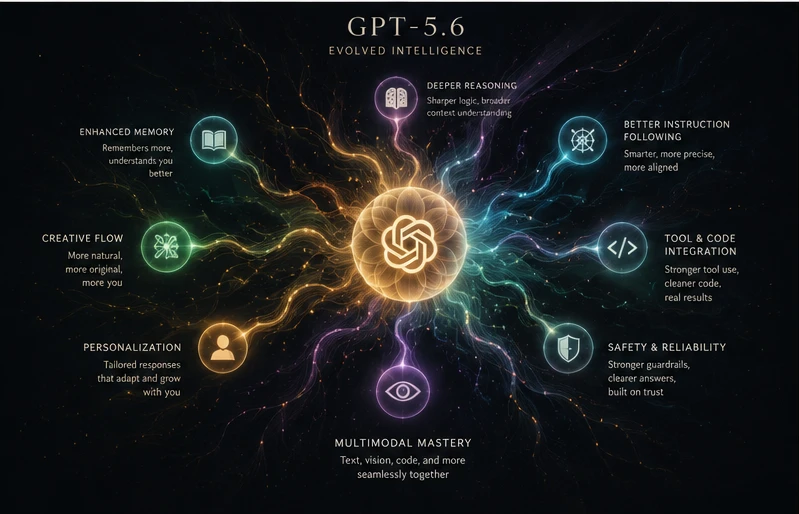

OpenAI just rolled out GPT-5.6, split into three tiers: Sol (the flagship), Terra (balanced, cheaper), and Luna (fast and cheap). Most of the coverage this week is about coding benchmarks and enterprise agent work, which is fair - that's genuinely where the biggest jump is. But there's a smaller set of changes in here that actually matter if you're using ChatGPT as a creative tool rather than a coding assistant.
The naming finally makes sense
Sol / Terra / Luna isn't just a rebrand. The number (5.6) tracks the model generation, while the tier name tracks capability level, and OpenAI says each tier can now update on its own schedule going forward. Practically, that means you pick Luna for quick, disposable drafts, Terra for regular day-to-day writing and planning, and save Sol for anything where the output quality genuinely needs to be your best - a treatment, a script pass, a real production plan.
Better at "messy context," which matters for pre-production
GPT-5.6 is noticeably better at pulling structure out of messy notes - the kind of scattered voice-memo-transcript, half-written outline, reference-image-description chaos that a lot of AI film and music projects actually start as. If you've been feeding ChatGPT a pile of loose notes to get a scene breakdown or a shot list out of it, this is the version where that workflow gets meaningfully less painful.

The "ultra" multi-agent mode is interesting for complex projects
Sol's new ultra mode can split a big task across multiple sub-agents working in parallel instead of one linear pass. For something like planning a multi-episode series - keeping character notes, tone, and continuity straight across several scripts at once - that kind of parallel handling is a real fit, even though it's clearly built with coding workflows as the primary use case.
Where it doesn't change much
If you're mainly using ChatGPT for quick prompt-writing help alongside Midjourney, Kling, or Suno, day-to-day you probably won't feel a dramatic difference from Terra or Luna - they're solid, cheaper, and that's most of what creative prompting actually needs. Sol is the one worth reaching for when a project's complex enough to justify it, not a default swap for everything.